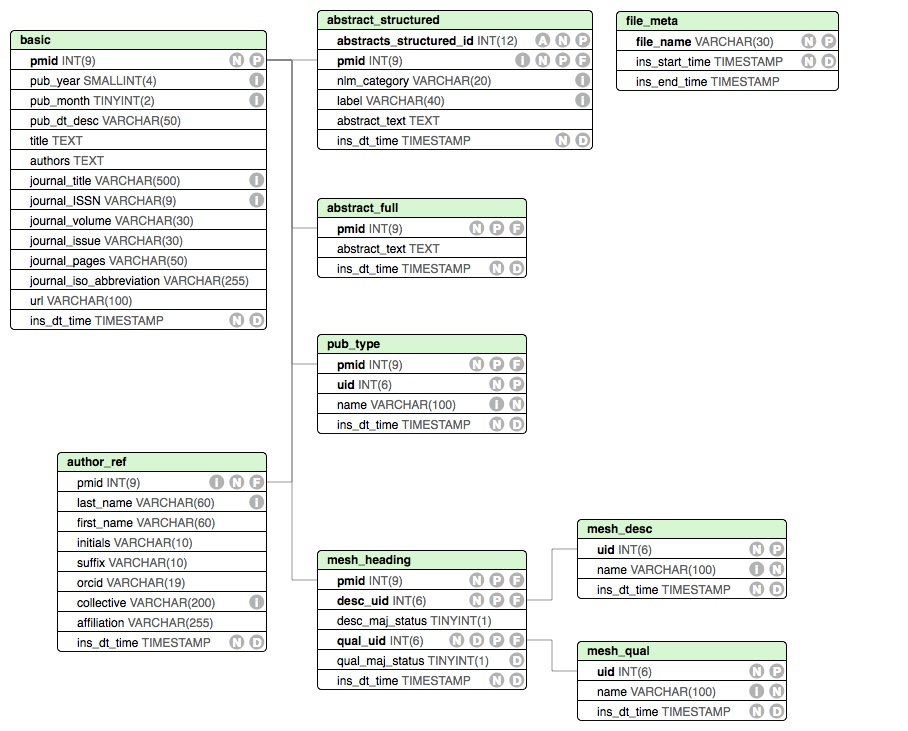

Utility functions to parse and store PubMed searches via BioServices.EUtils
Import Module
using BioMedQuery.PubMedThis module provides utility functions to parse, store and export queries to PubMed via the NCBI EUtils and its julia interface BioServices.EUtils. For many purposes you may interact with the higher level pipelines in [BioMedQuery.Processes]. Here, some of the lower level functions are discussed in case you need to assemble different pipelines.
Basics of searching PubMed
We are often interested in searching PubMed for all articles related to a search term, and possibly restricted by other search criteria. To do so we use BioServices.EUtils. A basic example of how we may use the functions esearch and efetch to accomplish such task is illustrated below.
using BioServices.EUtils
using XMLDict
using LightXML
search_term = "obstructive sleep apnea[MeSH Major Topic]"
#esearch
esearch_response = esearch(db="pubmed", term = search_term,
retstart = 0, retmax = 20, tool ="BioJulia")
#convert xml to dictionary
esearch_dict = parse_xml(String(esearch_response.body))
#convert id's to a array of numbers
ids = [parse(Int64, id_node) for id_node in esearch_dict["IdList"]["Id"]]
#efetch
efetch_response = efetch(db = "pubmed", tool = "BioJulia", retmode = "xml", rettype = "null", id = ids)
#convert xml to xml node tree
efetch_doc = root(parse_string(String(efetch_response.body)))Handling XML responses
Many APIs return responses in XML form.
To parse an XML to a Julia dictionary we can use the XMLDict package
using XMLDict
dict = parse_xml(String(response.body)) You can save directly the XML String to file
xdoc = parse_string(esearch)
save_file(xdoc, "./file.xml")Save eseach/efetch responses
Save PMIDs to MySQL
If we are only interseted in saving a list of PMIDs associated with a query, we can do so as follows
dbname = "entrez_test"
host = "127.0.0.1";
user = "root"
pwd = ""
#Collect PMIDs from esearch result
ids = Array{Int64,1}()
for id_node in esearch_dict["IdList"]["Id"]
push!(ids, parse(Int64, id_node))
end
# Initialize or connect to database
const conn = DBUtils.init_mysql_database(host, user, pwd, dbname)
# Create `article` table to store pmids
PubMed.create_pmid_table!(conn)
#Save pmids
PubMed.save_pmids!(conn, ids)
#query the article table to explore list of pmids
all_pmids = BioMedQuery.PubMed.all_pmids(conn)Export efetch response as EndNote citation file
We can export the information returned by efetch as and EndNote/BibTex library file
citation = PubMed.CitationOutput("endnote", "./citations_temp.endnote", true)
nsucceses = PubMed.save_efetch!(citation, efetch_doc, verbose)Save efetch response to MySQL database
Save the information returned by efetch to a MySQL database
dbname = "efetch_test"
host = "127.0.0.1";
user = "root"
pwd = ""
# Save results of efetch to database and cleanup intermediate CSV files
const conn = DBUtils.init_mysql_database(host, user, pwd, dbname)
PubMed.create_tables!(conn)
PubMed.save_efetch!(conn, efetch_doc, false, true) # verbose = false, drop_csv = trueSave efetch response to SQLite database
Save the information returned by efetch to a MySQL database
db_path = "./test_db.db"
const conn = SQLite.DB(db_path)
PubMed.create_tables!(conn)
PubMed.save_efetch!(conn, efetch_doc)Return efetch response as a dictionary of DataFrames
The information returned by efetch can also be returned as dataframes. The dataframes match the format of the tables that are created for the sql saving functions (schema image below). These dataframes can also easily be saved to csv files.
dfs = PubMed.parse(efetch_doc)
PubMed.dfs_to_csv(dfs, "my/path", "my_file_prefix_")Exploring output databases
The following schema has been used to store the results. If you are interested in having this module store additional fields, feel free to open an issue

We can also explore the tables using BioMedQuery.DBUtils, e,g
tables = ["author_ref", "mesh_desc",
"mesh_qual", "mesh_heading"]
for t in tables
query_str = "SELECT * FROM "*t*" LIMIT 10;"
q = DBUtils.db_query(db, query_str)
println(q)
endIndex
BioMedQuery.PubMed.abstractsBioMedQuery.PubMed.abstracts_by_yearBioMedQuery.PubMed.add_mysql_keys!BioMedQuery.PubMed.all_meshBioMedQuery.PubMed.all_pmidsBioMedQuery.PubMed.citations_bibtexBioMedQuery.PubMed.citations_endnoteBioMedQuery.PubMed.create_pmid_table!BioMedQuery.PubMed.create_tables!BioMedQuery.PubMed.db_insert!BioMedQuery.PubMed.db_insert!BioMedQuery.PubMed.db_insert!BioMedQuery.PubMed.dfs_to_csvBioMedQuery.PubMed.dict_to_arrayBioMedQuery.PubMed.drop_mysql_keys!BioMedQuery.PubMed.get_article_meshBioMedQuery.PubMed.get_article_mesh_by_conceptBioMedQuery.PubMed.parse_MedlineDateBioMedQuery.PubMed.parse_articlesBioMedQuery.PubMed.parse_authorBioMedQuery.PubMed.parse_monthBioMedQuery.PubMed.parse_orcidBioMedQuery.PubMed.parse_yearBioMedQuery.PubMed.remove_csvsBioMedQuery.PubMed.remove_csvsBioMedQuery.PubMed.save_efetch!BioMedQuery.PubMed.save_efetch!BioMedQuery.PubMed.save_pmids!BioMedQuery.PubMed.strip_newline
Structs and Functions
BioMedQuery.PubMed.abstracts — Method.abstracts(db; local_medline=false)Return all abstracts related to PMIDs in the database. If local_medline flag is set to true, it is assumed that db contains basic table with only PMIDs and all other info is available in a (same host) medline database
BioMedQuery.PubMed.abstracts_by_year — Method.abstracts_by_year(db, pub_year; local_medline=false)Return all abstracts of article published in the given year. If local_medline flag is set to true, it is assumed that db contains article table with only PMIDs and all other info is available in a (same host) medline database
BioMedQuery.PubMed.add_mysql_keys! — Method.add_mysql_keys!(conn)Adds indices/keys to MySQL PubMed tables.
BioMedQuery.PubMed.all_pmids — Method.all_pmids(db)Return all PMIDs stored in the basic table of the input database
BioMedQuery.PubMed.citations_bibtex — Function.citations_bibtex(article::Dict{String,DataFrame}, verbose=false)Transforms a Dictionary of pubmed dataframes into text corresponding to its bibtex citation
BioMedQuery.PubMed.citations_endnote — Function.citations_endnote(article::Dict{String,DataFrame}, verbose=false)Transforms a Dictionary of pubmed dataframes into text corresponding to its endnote citation
BioMedQuery.PubMed.create_pmid_table! — Method.create_pmid_table!(conn; tablename="article")Creates a table, using either MySQL of SQLite, to store PMIDs from Entrez related searches. All tables are empty at this point
BioMedQuery.PubMed.create_tables! — Method.create_tables!(conn)Create and initialize tables to save results from an Entrez/PubMed search or a medline file load. Caution, all related tables are dropped if they exist
BioMedQuery.PubMed.db_insert! — Function.db_insert!(conn, articles::Dict{String,DataFrame}, csv_path=pwd(), csv_prefix="<current date>_PubMed_"; verbose=false, drop_csvs=false)Writes dictionary of dataframes to a MySQL database. Tables must already exist (see PubMed.create_tables!). CSVs that are created during writing can be saved (default) or removed.
BioMedQuery.PubMed.db_insert! — Function.db_insert!(conn, csv_path=pwd(), csv_prefix="<current date>_PubMed_"; verbose=false, drop_csvs=false)Writes CSVs from PubMed parsing to a MySQL database. Tables must already exist (see PubMed.create_tables!). CSVs can optionally be removed after being written to DB.
BioMedQuery.PubMed.db_insert! — Function.db_insert!(conn, articles::Dict{String,DataFrame}, csv_path=pwd(), csv_prefix="<current date>_PubMed_"; verbose=false, drop_csvs=false)Writes dictionary of dataframes to a SQLite database. Tables must already exist (see PubMed.create_tables!). CSVs that are created during writing can be saved (default) or removed.
BioMedQuery.PubMed.dfs_to_csv — Function.dfs_to_csv(dfs::Dict, path::String, [file_prefix::String])Takes output of toDataFrames and writes to CSV files at the provided path and with the file prefix.
BioMedQuery.PubMed.drop_mysql_keys! — Method.drop_mysql_keys!(conn)Removes keys/indices from MySQL PubMed tables.
BioMedQuery.PubMed.get_article_mesh — Method.get_article_mesh(db, pmid)Get the all mesh-descriptors associated with a given article
get_article_mesh_by_concept(db, pmid, umls_concepts...; local_medline)Get the all mesh-descriptors associated with a given article
Arguments:
- query_string: "" - assumes full set of results were saved by BioMedQuery directly from XML
BioMedQuery.PubMed.parse_articles — Method.parse_articles(xml)Parses a PubMedArticleSet that matches the NCBI-XML format
BioMedQuery.PubMed.save_efetch! — Function. pubmed_save_efetch(efetch_dict, conn)Save the results (dictionary) of an entrez-pubmed fetch to the input database.
BioMedQuery.PubMed.save_efetch! — Function.save_efetch!(output::CitationOutput, efetch_dict, verbose=false)Save the results of a Entrez efetch to a bibliography file, with format and file path given by output::CitationOutput
BioMedQuery.PubMed.save_pmids! — Function. save_pmids!(conn, pmids::Vector{Int64}, verbose::Bool=false)Save a list of PMIDS into input database.
Arguments:
conn: Database connection (MySQL or SQLite)pmids: Array of PMIDsverbose: Boolean to turn on extra print statements
BioMedQuery.PubMed.all_mesh — Method.all_mesh(db)Return all MeSH stored in the mesh_desc table of the input database
BioMedQuery.PubMed.dict_to_array — Method.dict_to_array(dict::Dict)Given a dictionary, returns a tuple of arrays with the keys and values.
BioMedQuery.PubMed.parse_MedlineDate — Method.parse_MedlineDate(ml_dt::String)Parses the contents of the MedlineDate element and returns a tuple of the year and month.
BioMedQuery.PubMed.parse_author — Method.parse_authorTakes xml for author, and returns parsed elements
BioMedQuery.PubMed.parse_month — Method.parse_month(mon::String)Parses the string month (month or season) and returns an integer with the first month in range.
BioMedQuery.PubMed.parse_orcid — Method.parse_orcid(raw_orc::String)Takes a string containing an ORC ID (url, 16 digit string) and returns a formatted ID (0000-1111-2222-3333).
BioMedQuery.PubMed.parse_year — Method.parse_year(yr::String)Parses the string year and returns an integer with the first year in range.
BioMedQuery.PubMed.remove_csvs — Function.remove_csvs(dfs, path, file_prefix)Removes all of the CSV files associated with a dictionary of dataframes
BioMedQuery.PubMed.remove_csvs — Method.remove_csvs(paths::Vector)Removes all of the CSV files associated with an array of paths
BioMedQuery.PubMed.strip_newline — Method.strip_newline(val::String)Replaces new line characters with spaces.